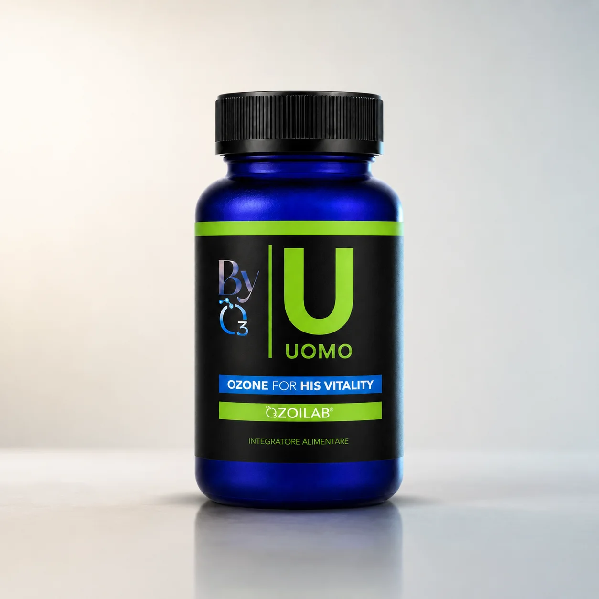
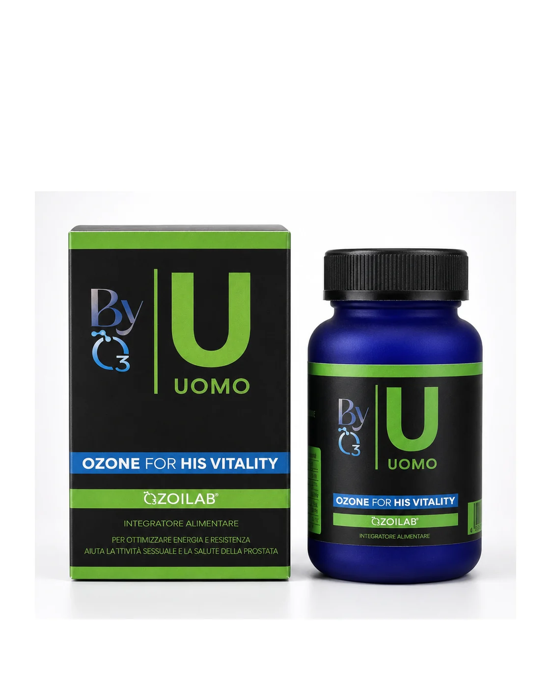
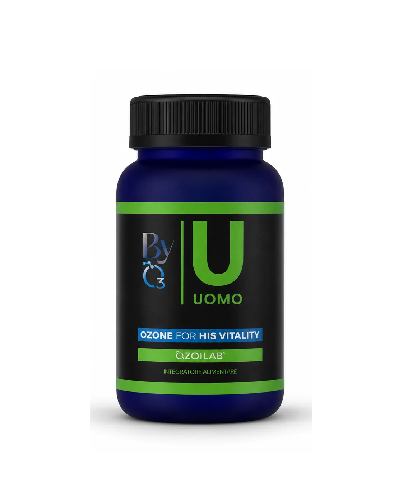

Energia adulta
Formula pensata per periodi di stress, lavoro, recupero fisico e mentale.



Ozone for His Vitality
Una formula quotidiana per tono fisico e mentale, equilibrio maschile, funzione muscolare e routine adulta.
Formula pensata per periodi di stress, lavoro, recupero fisico e mentale.
Arginina, Ornitina e Citrullina sostengono la logica della formula.
Tribulus, Maca e Cordyceps per un profilo mirato alla vitalità.
L'ingrediente-firma comune a tutta la linea BYO3.
Uomo combina OZOILAB® con minerali, aminoacidi e attivi vegetali selezionati.
BYO3 Uomo evita toni allusivi e promessa rapida: il focus è una routine seria, multi-attivo e leggibile.
Leggere sempre l'etichetta e chiedere un parere professionale in caso di terapie o condizioni specifiche.
2 capsule al giorno, con o senza cibo.
Una confezione copre circa 30 giorni.
Non indicato in caso di deficit G6PD/favismo.